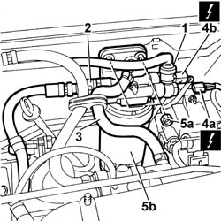
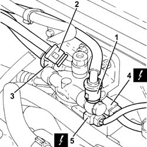
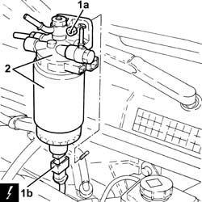

1044B10 fuel filter assembly - r + r or replace
- Path
- Procedures > 10 ENGINE > 1044 FUEL CIRCUIT PUMP/AND DEVICES > 1044B fuel filters > 1044B10 fuel filter assembly - r + r or replace
- Kind
- repair procedure (removal / refitting; the operation number is the code)
- Applies to
- engines: 1.9 JTD 8V, 1.9 JTD 16V; all production periods
- Interactive page
- https://sloeber94.github.io/elrnDB-a147/en/#/3025015
Applies to: engines: 1.9 JTD 8V; all production periods
 Removing
Removing
 Refitting
RefittingOpen the boot lid and disconnect the negative battery terminal.
1016A10 sound-proofing cover - r + r
1. Disconnect the front fuel delivery line from the fuel filter.
2. Disconnect the supply pipe to the pressure pump from the fuel filter.
3. Disconnect the supply pipe to the fuel return manifold from the fuel filter.
4. Disconnect the electrical connections of the diesel coil (4a) and the fuel temperature coil (4b).
5. Undo nuts (5a) and remove the fuel filter assembly (5b).
 | Name | Connector |
|---|---|---|
4a | Diesel preheating resistor |
| Name | Connector |
|---|---|---|
4b | Fuel temperature sensor |

Applies to: engines: 1.9 JTD 8V; all production periods
Refitting
RemovingFit the fuel filter assembly and tighten the fixing nuts to torque.
 | Fastening | Component | Ø | Value (daNm) |
|---|---|---|---|---|
- | Nut | FUEL FILTER | M8 | 2.4 |
Connect the sensor electrical connections.
| Name | Connector |
|---|---|---|
- | Diesel preheating resistor |
| Name | Connector |
|---|---|---|
- | Fuel temperature sensor |
Connect the fuel pipes disconnected previously.
1016A10 sound-proofing cover - r + r
Connect the negative battery terminal and close the bonnet lid.
Applies to: engines: 1.9 JTD 16V; all production periods
Removing
RefittingPosition the vehicle on the ramp.
Proceed with removal 7025A12 Engine front sound insulation COVER - R.R. .
Proceed with removal 7025A14 Bonnet LID - R.R. .
Proceed with removal 1016A10 sound-proofing cover - r + r .
Ensure that the ignition key is in the OFF position, then disconnect the negative battery terminal (-).
| Name | Connector |
|---|---|---|
- | Battery |
Proceed with removal 7055B54 under-engine guard - r r .
1. Disconnect the quick-release connector for the front fuel supply pipe , fuel filter side.
2. Disconnect the rapid attachment on the fuel return pipe to the fuel return manifold pipe, fuel filter side.
3. Disconnect the quick-release connector for the fuel supply pipe to the pressure pump, fuel filter side.
4. Disconnect the electrical connection from the fuel temperature sensor.
| Name | Connector |
|---|---|---|
4 | Fuel temperature sensor |
5. Disconnect the electrical connection from the fuel pre-heating device.
| Name | Connector |
|---|---|---|
5 | Fuel temperature sensor |

Applies to: engines: 1.9 JTD 16V; all production periods
1. Undo the nuts (1a), raise the fuel filter sufficiently to disconnect the electrical connection from the water presence sensor in the fuel filter (1b).
| Name | Connector |
|---|---|---|
1b | Water in diesel filter sensor |
2. Remove the fuel filter.

Applies to: engines: 1.9 JTD 16V; all production periods
Refitting
RemovingConnect the electrical connection to the water-in-fuel filter sensor, then refit the complete fuel filter in its seating and secure with its nuts.
Connect the electrical connection to the fuel pre-heating device.
Connect the electrical connection to the fuel temperature sensor.
Connect the quick-release connector for the fuel supply pipe to the pressure pump, fuel filter side.
Connect the rapid attachment of the front fuel return pipe to the fuel return manifold pipe, fuel filter side.
Connect the quick-release connector for the front fuel supply pipe, fuel filter side.
Proceed with refitting 7055B54 under-engine guard - r r .
Connect the negative (-) battery terminal.
Proceed with refitting 1016A10 sound-proofing cover - r + r .
Proceed with refitting 7025A14 Bonnet LID - R.R. .
Proceed with refitting 7025A12 Engine front sound insulation COVER - R.R. .
Remove the car from the ramps.
Topics linked from this page (8)
- 1016A10 sound-proofing cover - r + r
- 7025A12 Engine front sound insulation COVER - R.R.
- 7025A14 Bonnet LID - R.R.
- 7055B54 under-engine guard - r r
- A1B Battery ( Connectors )
- K31 Water in diesel filter sensor
- K81 Fuel temperature sensor
- O20 Diesel preheating resistor